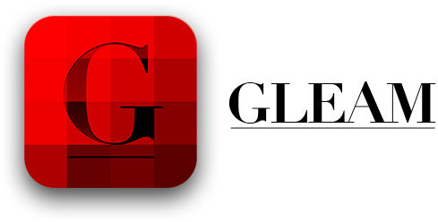
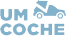
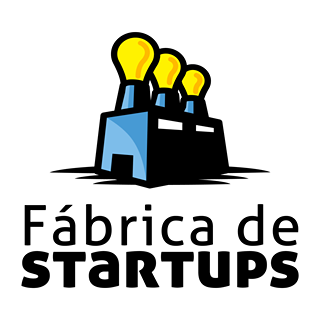
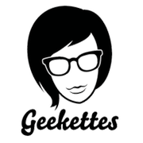
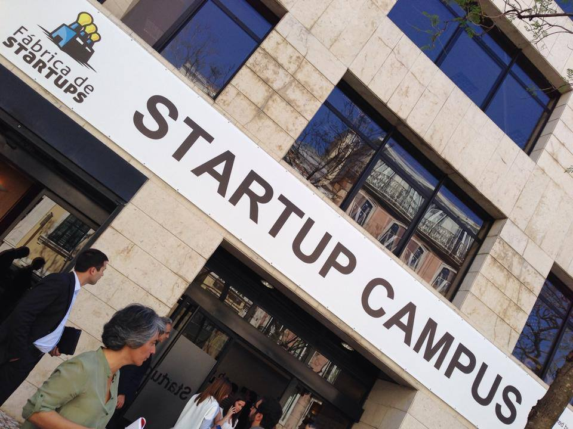

Olá Lisboa! Hello Lisbon!
Bem-vindas à 2ª edição do Rails Girls em Portugal! Junta-te a nós neste workshop de dois dias, gratuito, onde irás aprender a desenvolver uma App em Ruby on Rails! Não é necessário nenhum conhecimento prévio em programação.
Welcome to the 2nd edition of Rails Girls in Portugal! Join us in this free two-day workshop where you will learn how to build an application in Ruby on Rails! No need to have any previous knowledge on programming.
APPLY NOW! The first round is until the 29th May and the second round until the 5th. The sooner, the better!
You learn designing, prototyping and coding with the help from our coaches.
You need your own laptop, curiosity and a sprinkle of imagination!
Want to help? We are looking for volunteers, partners, sponsors and Rails coaches. Email us.
| 09h00 - 10h00 |
Registration, breakfast and installation party!Meet & greet. |
|---|---|
| 10:00 - 10:15 |
WelcomeOutline of the day & word from sponsors |
| 10:20 - 10:45 |
WORKSHOPHow to design a web app |
| 10:50 - 11:10 |
Tryruby.orgLet's get coding! |
| 11:10 - 13:00 |
WORKSHOPJumpstart your first web application |
| 13:00 - 14:00 | Lunch |
| 14:10 - 14:30 |
WORKSHOPBento Box: Recap of what we’ve learned and how it all fits together. |
| 14:30 - 16:30 |
Hands on the app. |
| 16:30 - 17:00 | Coffee break and lightning talk. |
| 17:00 - 19:00 |
WORKSHOPExtend your application. |
| 20h00 - 22h00 |
Dinner & Portugal Geekettes MeetupOpen for everyone, meet cool people interested in tech. |
Rails Girls Lisboa
7th June
It will take place at STARTUP CAMPUS. To get there check below.
Applications
First round: 1st to 29th May
Second round: 29th to 5th May
Acceptances informed during the following weeks.
Applications until the 29th May are valid to the second round.
Is this going to be in english? Nope, most of the event and speeches are going to be done in Portuguese! The local coaches are native speakers. However, some of the inspirational talks as well as instructions might be in english. Email us
How much does the workshop cost? Nothing, it's free! You just need to be excited and prepared to learn a lot and work hard!
Who is this aimed for? Women of any age with basic knowledge of working with a computer. We’ve had people of all ages taking part. The event will be in Portuguese, but English translators will be available. Please bring your laptop.
Can men attend? Yes, but girls are given a priority.
I know how to program - How can I help? We’re also looking for people to be coaches. We’ll have a two-three hour workshop before the event to walk you through the curriculum. Email us
 Gleam is the perfect service for discovering, shopping for and organizing the best of world fashion. Available as an iPhone, iPad and Android app.
Rails Girls Lisboa has awesome coaches! This is the list of the amazing companies our coaches work for.
Chic by Choice is a one-of-a-kind hire destination that allows women to access the most breathtaking designer dresses, straight from the catwalks, at a fraction of the retail price.
 Faber Ventures is a product / venture development company that explores opportunities to build, launch and scale early stage digital businesses through a hands-on, integrated approach.
Faber Ventures is a product / venture development company that explores opportunities to build, launch and scale early stage digital businesses through a hands-on, integrated approach.
Imaginary Cloud - We help our clients launch successful web and mobile products. We rescue software projects which have gone wrong elsewhere. We help you grow your business by leveraging our expertise.
Linkedcare - Toda a sua prática médica numa só aplicação. Integramos todas as funcionalidades necessárias à sua prática de forma inteligente. Utilize uma verdadeira ferramenta de apoio à decisão clínica.
Liquid is a platform that enables publishers to dynamically serve their applications based on user profiling, activity and context - without changing the code.
A SABE Online - Sempre a Aprender é uma nova editora, produtora e distribuidora de conteúdos vocacionados para a aprendizagem profissional e para a valorização pessoal, de uma forma contínua e permanente.
Runtime Revolution - Rails development done right. We're combining all the latest and greatest with some hard-core software engineering, to make sure your project is up there with the best of them.
 Um Coche é um site de boleias que liga passageiros e condutores entre 12 cidades de Portugal.
Rails Girls Lisboa is co-organized with our awesome partners.
Want to help? We're looking for partners and sponsors for the event! Email us!
 STARTUP CAMPUS is the newest and largest building in Europe where startups can develop their products. It belongs to Fábrica de Startups, an incubator and accelerator in Lisbon.
 Portugal Geekettes is a organization focused on empower women in tech, with tools, resources and a worldwide network.
 Afonso Tsukamoto, coach
@AfonsoTsukamoto
Afonso Tsukamoto, coach
@AfonsoTsukamoto
 Ana Gonçalves, organizer & coach
@sbg_ana
Ana Sofia Pinho, organizer
@anasofiapinho
Alexandre Gonçalves, coach
@alexd_goncalves
Alexandre Quitério, coach
@alquiterio
Bernardo Simões, coach
@golfadas
Filipe Correia, coach
Ilídio Varandas, coach
@varandas
Ivo Benedito, coach
@ivobenedito
João Almeida, coach
João Gonçalves, coach
João Horta, coach
@jpahorta
João Soares, coach
@_jasoares
José Duarte, coach
@jfduarte
Jun Hanamaki, coach
Nuno Duarte, coach
Patrick Pinto, coach
Pedro Gaspar, coach
@pedrogaspar
Pedro Ivo Gimenes, coach
@x1s
Pedro Moreira, coach
@pedromoreira
Ricardo Otero, coach
@rikas
Tiago Franco, coach
@GamaFranco
Ana Gonçalves, organizer & coach
@sbg_ana
Ana Sofia Pinho, organizer
@anasofiapinho
Alexandre Gonçalves, coach
@alexd_goncalves
Alexandre Quitério, coach
@alquiterio
Bernardo Simões, coach
@golfadas
Filipe Correia, coach
Ilídio Varandas, coach
@varandas
Ivo Benedito, coach
@ivobenedito
João Almeida, coach
João Gonçalves, coach
João Horta, coach
@jpahorta
João Soares, coach
@_jasoares
José Duarte, coach
@jfduarte
Jun Hanamaki, coach
Nuno Duarte, coach
Patrick Pinto, coach
Pedro Gaspar, coach
@pedrogaspar
Pedro Ivo Gimenes, coach
@x1s
Pedro Moreira, coach
@pedromoreira
Ricardo Otero, coach
@rikas
Tiago Franco, coach
@GamaFranco
Rails Girls Lisboa is going to be at
STARTUP CAMPUS
Rua Rodrigo da Fonseca nº11
1250-096 Lisboa
Here are the GPS coordinates 38.720312, -9.151122.
You can also check it on Google Maps.
Should you get lost or stuck, dial 00351 910 444 710. This should connect you to an organizer or coach that will try to help you get there.
